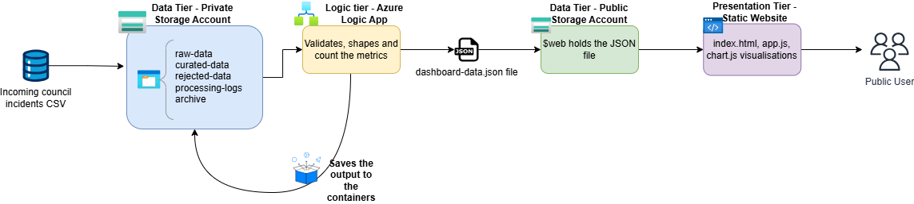
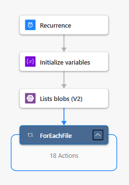
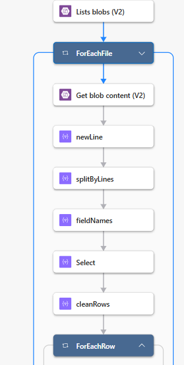
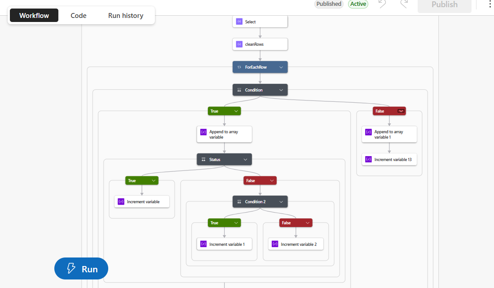
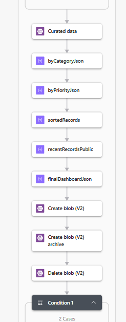
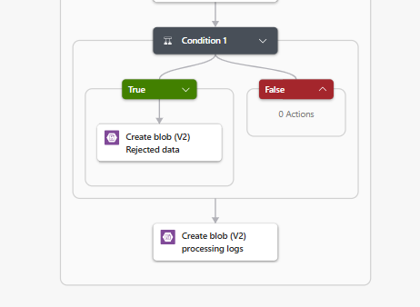
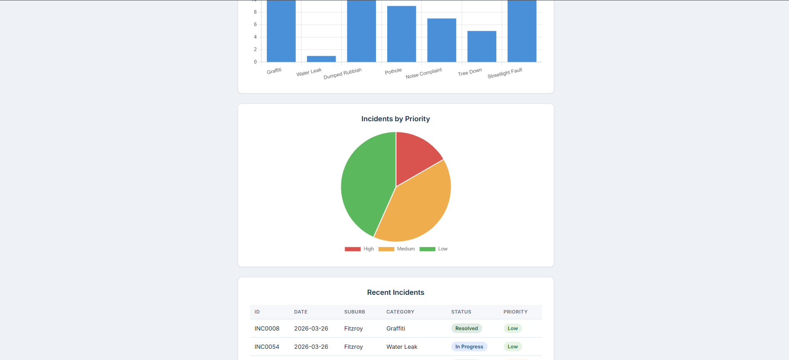
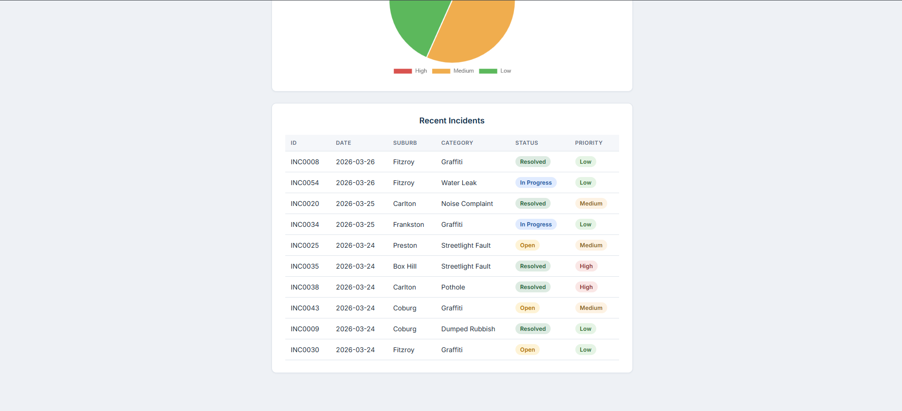

01 / The council’s need
From recurring files to a clear picture of community needs
This project focused on building a lightweight cloud-based Azure solution to turn recurring council incident files into secure, accessible public reporting.
Problem statement
The council receives recurring files covering graffiti, water leaks, dumped rubbish, potholes, noise complaints, fallen trees and streetlight faults. It needs a clear view of these incidents at a glance, with reliable data and private operational details kept out of public reporting.
Business case
Build one automated route from incoming CSVs to a small public dashboard: securely store files, validate records, prepare reporting metrics and publish approved information. Keep the solution simple enough for a small council without a dedicated development team, with proportionate governance, privacy, access and cost controls.
My role: junior cloud consultant on an individual assessment project. I designed the architecture, built the Logic App workflow and created the static dashboard using HTML, CSS, JavaScript and Chart.js.
Three tiers. One clear data boundary.
Private Blob Storage holds incoming and processed files. An Azure Logic App validates, shapes and counts the records. A separate public storage account hosts the website and approved JSON. The dashboard reads only dashboard-data.json; it never reads the raw CSV.

02 / What I built
Validate first. Publish approved data.
I built a Consumption-plan Logic App with 1 trigger and 37 actions, using two record arrays and 14 counters to prepare the dashboard data.
- Schedule and ingest: a daily recurrence trigger at 23:55 AEST lists files in
raw-dataand reads each CSV. - Parse and validate: map rows to named fields, remove the trailing blank row and check six rules: incident ID, suburb and category must be present; dates must follow YYYY-MM-DD; status and priority must use approved values. Invalid rows go to a rejected-record array.
- Calculate and shape: save valid records, count incidents by status, priority and category, then select the ten most recent incidents. Remove description, latitude and longitude from the public view.
- Publish: write the prepared metrics and approved records to
$web/data/dashboard-data.json. The website formats and displays the results without calculating its own aggregates. - Archive and log: archive the original file before removing it from the incoming folder, save rejected records when present and write a log with the filename, processing time, counts and outcome.





03 / Evidence
60 incidents. One readable overview.
The sample covers 60 incidents across 7 categories and 15 suburbs, reported from 1–26 March 2026. The project report records 60 valid and 0 invalid records in the sample run, processed in about 50 seconds.
| Status | Sample incidents |
|---|---|
| Open | 22 |
| Resolved | 23 |
| In progress | 15 |
| Total | 60 |
The priority split is 10 high, 24 medium and 26 low. Categories include graffiti (18), dumped rubbish (10), streetlight faults (10), potholes (9), noise complaints (7), fallen trees (5) and water leaks (1).

The dashboard combines four KPI cards, category and priority charts, a last-updated badge and the ten most recent incidents. Only 6 of the 9 source fields are public: incident ID, reported date, suburb, category, status and priority.


Validation testing: I also built an eight-record test file covering missing values, unapproved status and priority values, and date-format errors to check that invalid rows are quarantined rather than published.
04 / Governance
Keep private data private
I planned governance before building resources, using Microsoft’s Cloud Adoption Framework at a scale suited to the brief.
- Two storage accounts: private storage disables anonymous access and contains
raw-data,curated-data,rejected-data,processing-logsandarchive. Public access is limited to the website’s$webcontainer. - Three private fields: description, latitude and longitude are excluded from public records.
- Clear ownership: one resource group, one region and four tags—project, owner, environment and costCentre—support organisation and cost tracking.
- Controlled access and retention: administrative, operational and public access tiers define responsibilities. Seven-day soft delete protects blobs and containers, while the archive retains processed CSVs.
05 / Council impact
Clearer visibility. Repeatable processing.
- Understand the workload at a glance: status, category and priority summaries turn recurring incident files into a clear picture of service demand.
- Reduce repeated manual preparation: the scheduled workflow takes the sample file from raw CSV to a validated dashboard in about 50 seconds, with archives and logs supporting review.
- Protect operational details: only six approved fields reach the public view, with private records held in a separate storage account.
- Keep maintenance proportionate: Logic Apps and static hosting provide a serverless solution without virtual machines or dedicated web servers to manage.
The sample run demonstrates the workflow; staff time savings and improvements in incident resolution were not measured in this assessment.
Trade-offs and next steps
A scheduled trigger makes processing predictable, but dashboard updates appear at the next run rather than immediately after a file arrives. The current design also relies on manual run-history checks and has no dedicated error-handling branch for corrupted files.
My next steps are failure-branch email alerts, Microsoft Entra ID authentication where a restricted audience is needed, and lifecycle rules to move archived files to cooler storage tiers.
06 / Key learnings
Key learnings
- Define governance before building. Data classification and access requirements shaped the separation between private processing and public reporting.
- Validate before counting. Checking records before aggregation keeps invalid entries out of dashboard metrics.
- Prepare data in one place. The Logic App handles calculations and shaping, leaving the website to present approved results.
- Build traceability into the flow. Archives, rejected records and processing logs make each run easier to review.
- Make trade-offs explicit. A scheduled, serverless design keeps the platform simple, with a clear delay between file arrival and dashboard updates.